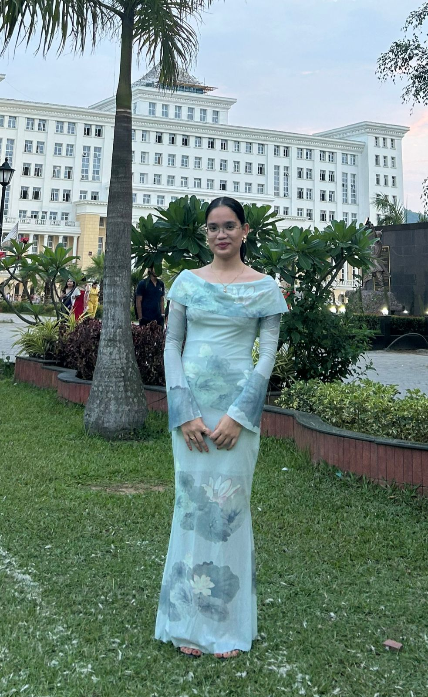

Explore the Beauty of Nagaland
Discover powerful books and films that shape literature and culture.

About Me
I, Barsha Das, a student of The Assam Royal Global University currently pursuing my Bachelor's degree in English, am the founder and curator of Voices from the Hills. I am a storyteller and researcher with a deep-rooted passion for indigenous literature, women’s narratives, and ecological wisdom.
This platform was launched to document and celebrate the untold stories of Naga women and their intimate connection with land and oral traditions. Through curated booklists, films, and multimedia content, Voices from the Hills bridges generations—honoring ancestral knowledge while exploring new ways of understanding gender, nature, and identity in Naga society.